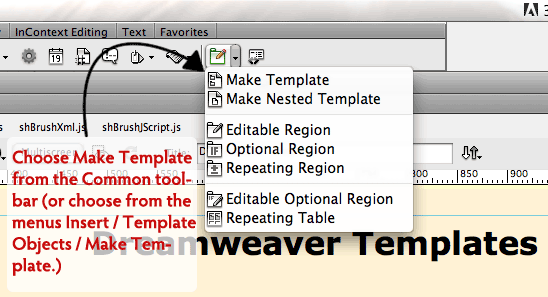

Dreamweaver Templates
Overview
Dreamweaver templates are one of the most compelling reason to use Dreamweaver; they are a huge time-saver and can help reduce page errors. Think of a template as a starting point for building your content pages - instead of having to write all the standard items (typically the tags used for layout such as <header>, <article>, <section>, and <footer>) from scratch each time, you create a new page based on your template. If for some reason you need to change your layout, you make the change to the template and all pages built from that template will automatically be updated.
Process
If you are new using templates, following these steps will help you keep everything straight. Steps 5-8 aren’t technically necessary to creating a template, but they are handing when getting your template to a “production-ready” format.
- Create the master page, which all others will be derived from, in its entirety—the graphics, the HTML, your Javascript, global navigation, everything. The page must look flawless and perfect. Let’s say you named this file “index.html”.
- Now that you have your “golden master”, create a template based on this page (index.html). 
- Create your Editable Regions. This is where many people make a mistake; they are not sure what should be converted to editable. The content that differs on each page should be editable. Things such as the header, footer, and global navigation will typically be left as a locked area (not editable) in the template.
- Save your template and give it a generic name—like “standard-content.dwt” (template files always end in *.dwt). At this point you have two files that look identical when displayed in a browser,
index.html and standard-content.dwt. Your index.html file is not based on your template or created from your template; it is time to fix that.
- Delete “index.html”. This can be a scary step since you put so much work into it already. If you prefer some level of safety, don’t delete it—instead rename it “index-old.html”.
- Create a new
index.html page based on your template and save it as “index.html”.
- Tweak your template to make it “production-ready”. This is done by removing all the index.html page specific content out of the editable regions.
- Save the template. That’s a lot of steps, but you’re done and now ready to start cranking out pages based on this new template.
Using Your Templates
To create a new page based on an existing template, choose File / New... from the menus. Choose “Page From Template” and then pick the template you wish to use.